Счетчики
Общие сведения
Счетчик - цифровое устройство, осуществляющее счет числа появлений на входе определенного логического уровня. В дальнейшем во всех случаях, когда это не оговаривается специально, будем полагать, что счетчик производит подсчет числа содержащихся во входном сигнале переходов с уровня лог. 0 к уровню лог. 1. При импульсном представлении логических переменных уровню лог. 1 соответствует импульс, и счетчик ведет счет поступающих на вход импульсов.
Числа в счетчике представляются определенными комбинациями состояний триггеров. При поступлении на вход очередного уровня лог. 1 в счетчике устанавливается новая комбинация состояний триггеров, соответствующая числу, на единицу большому предыдущего числа.
Таким образом, счетчик представляет собой логическое устройство последовательного типа, в котором новое состояние определяется предыдущим состоянием и значением логической переменной на входе.
Для представления чисел в счетчике могут использоваться двоичная или десятичная системы счисления. При использовании двоичной системы состояния триггеров и соответствующие им уровни на прямых выходах триггеров определяют цифры двоичных разрядов числа.
Если для регистрации двоичного числа в счетчике используется п триггеров, то максимальное значение числа, до которого может вестись счет, N=2п- 1, Так, при п= 4N=15. На рис. 3.40 показаны вход и выходы счетчика (без раскрытия схемы счетчика), а в табл. 3.19 приведено состояние триггеров, соответствующее различному числу поступивших на вход импульсов.
При использовании десятичной системы счисления цифры разрядов десятичного числа в счетчике представляются в четырехразрядной двоичной форме, т. е. используется двоично-кодированная десятичная система счисления. Таким образом, для представления цифр каждого разряда десятичного числа требуется четыре триггера, и если число десятичных разрядов k, то число триггеров, необходимое для регистрации чисел в счетчике равно 4k, а максимальное значение чисел N=10k – 1. В табл. 3.20 показана последовательность состояний триггеров в двухразрядном десятичном счетчике, приведенном на рис. 3.41.
Наряду с суммирующими счетчиками, в которых в процессе счета каждое очередное число на одну единицу превышает предыдущее, используются и такие счетчики, в которых в процессе счета числа последовательно убывают (эти счетчики называются вычитающими) Находят применение счетчики, которые допускают в процессе работы автоматическое переключение (реверс) из режима суммирующего счетчика в режим вычитающего счетчика, и наоборот. Такие счетчики называют реверсивными. Хотя для построения счетчиков могут использоваться любые типы триггеров, на которых может быть организован счетный вход, в дальнейшем будем пользоваться только одним типом, JK-триггерами.
Таблица 3.19
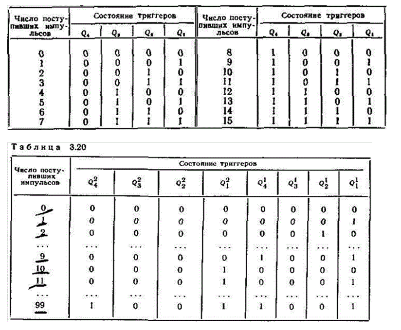
Суммирующие двоичные счетчики
В суммирующем счетчике поступление на вход очередного уровня лог. 1 (очередного импульса) вызывает увеличение на одну единицу хранимого в счетчике числа. Таким образом, в счетчике устанавливается число, которое получается путем суммирования предыдущего значения с единицей. Это суммирование проводится по обычным правилам выполнения операций сложения в двоичной системе счисления.
Заметим, что в процессе такого суммирования имеют место следующие особенности:
1) если цифра некоторого разряда остается неизменной либо изменяется с 0 на 1, то при этом цифры более старших разрядов не изменяются;
2) если цифра некоторого разряда изменяется с 1 на 0, то происходит инвертирование цифры следующего за ним более старшего разряда.
Этот принцип использован при построении схемы счетчика, представленной на рис. 3.42,а. В построении схемы имеются следующие особенности:
а) входы J и К, в каждом триггере объединены и на эти входы подан уровень лог. 1; таким образом, в каждом триггере синхронизирующий вход С является счетным входом триггера;
б) сигнал с прямого выхода триггера каждого разряда поступает на счетный вход С триггера следующего более старшего разряда, а на счетный вход триггера 1-го разряда Tr1подаются входные просчитываемые импульсы.
Если на счетном входе С триггера действует импульс, то его положительным фронтом переключается ведущая часть триггера, на отрицательном фронте — ведомая его часть. Итак, при каждом изменении сигнала на счетном входе с уровня лог. 1 на уровень лог. О изменяется на противоположное состояние выхода триггера. Таким образом, на отрицательном фронте сигнала на выходе триггера происходит переключение следующего за ним триггера более старшего разряда. На рис. 3.42,6 показана временная диаграмма работы данного счетчика.
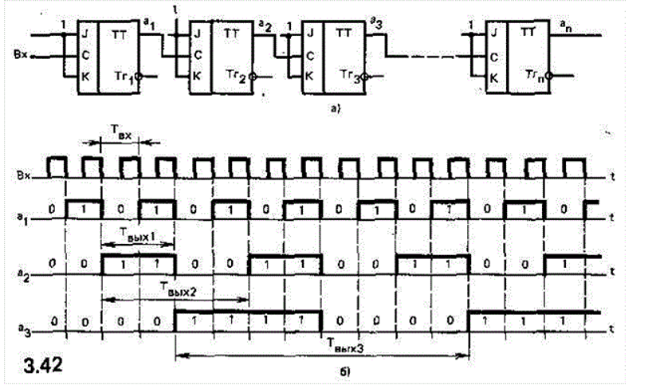
С каждым входным импульсом число в счетчике увеличивается на единицу. Такое нарастание числа происходит до тех пор, 'пока после (2n —1)-го входного импульса (n —число разрядов в счетчике) не установится в счетчике двоичное число 11... 1. Далее с приходом 2n-го импульса в счетчике устанавливается исходное состояние 00 ... 0, после чего счет ведется сначала. Таким образом, при непрерывной подаче на вход импульсов счетчик циклически с периодом в 2n входных импульсов сбрасывается в исходное состояние.
Рассмотренная схема счетчика имеет следующие недостатки. Пусть первые k триггеров младших разрядов счетчика установлены в состояние лог. 1 и на вход счетчика поступает Очередной импульс. При этом будет происходить процесс последовательного переключения триггеров. Если τ — время переключения триггера, то относительно отрицательного фронта входного импульса первый триггер переключится с задержкой τ; второй триггер переключается с задержкой τ относительно отрицательного фронта сигнала на выходе первого триггера и с задержкой 2τ относительно отрицательного фронта входного импульса и т. д. Следовательно, задержка в переключении k-гo триггера составит kτ. При большом числе разрядов задержка в переключении триггера старшего разряда может оказаться недопустимо большой. Ниже рассматриваются способы уменьшения этой задержки и, таким образом, увеличения быстродействия счетчика.
Для дальнейшего удобнее описывать процесс суммирования с помощью логических выражений.
Пусть a1,..., ап — цифры разрядов числа до суммирования; с1, ..., сп—цифры разрядов числа, получаемого в результате суммирования с единицей; Pi;— значение переноса, формируемого в (i—1)-м разряде счетчика и передаваемого в i-й разряд.
Функционирование i -го разряда счетчика можно описать таблицей истинности (табл. 3.21).
Поступление лог. 1 на вход счетчика можно представить переносом p1=l, подаваемым на первый разряд счетчика. Из таблицы истинности следует:
а) устанавливающееся в i-м разряде значение сi = aipiVaipi может быть получено путем подачи переноса pi на счетный вход триггера (i-го разряда, хранившего значение ai
б) перенос, передаваемый в {i+1)-й разряд, pi+i = aipi.Так как p1 = l, то р2 = а1
Схема счетчика, в разрядах которого реализуются приведенные логические выражения, дана на рис. 3.43,а. Объединенные информационные входы J и К в триггерах разрядов счетчика образуют счетные входы, на которые подаются поступающие в разряды переносы. Подлежащие счету импульсы подаются на входы синхронизации триггеров. При этом если на счетный вход триггера поступает перенос, равный лог. 1, то входной импульс переводит триггер в новое состояние. В противном случае в триггере сохраняется прежнее состояние. Для формирования переносов использованы элементы И. Цепь установки 0 используется для начальной установки в состояние 0 триггеров всех разрядов счетчика.
На рис. 3.43,6 представлены временные диаграммы работы счетчика. На переднем фронте входного импульса триггер принимает поданное на его информационные входы значение переноса, затем при спаде входного импульса на выходе триггера устанавливается новое значение. С каждым входным импульсом число в счетчике увеличивается на единицу. В данной схеме устранен недостаток предыдущей схемы счетчика. Отрицательным фронтом входного импульса одновременно переключаются те триггеры, на входы которых в данный момент поступает сигнал переноса pi =1. Таким образом может быть обеспечено более высокое быстродействие, чем в предыдущей схеме.
Фактором, ограничивающим быстродействие данной схемы счетчика, является последовательное формирование переносов.
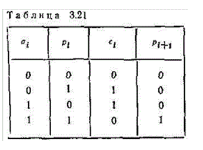
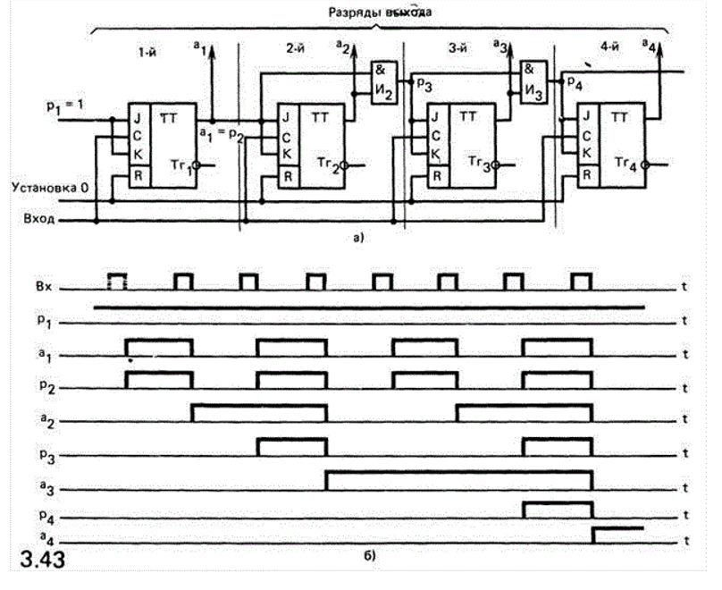
Формирование переноса в i-м разряде начинается с момента завершения формирования переноса в предыдущем (i—1)-м разряде и поступления сформированного переноса из (i - 1)-го в i-й разряд. При этом i-й разряд выдает перенос в следующий (i+l)-й разряд с задержкой относительно момента поступления переноса в i-й разряд. Эта задержка связана с задержкой распространения сигнала в элементе Иi. Таким образом, процесс продвижения переносов вдоль разрядов в счетчике последовательный (из разряда в разряд) и в каждом разряде имеет место задержка. Общее время задержки распространения переносов τпер определяется задержкой в одном разряде τпер 1 и числом разрядов, через которые проходят переносы.
В наихудшем случае, когда переносы последовательно проходят через все разряды счетчика (начиная со второго), общая задержка c = τпер 1 (n—1).
После переключения триггеров под действием предыдущего импульса, поданного на вход счетчика, только через время τпер на входах триггеров оказываются сформированными переносы и может быть подан очередной импульс на вход счетчика. Таким образом, временем τпер ограничивается минимальный временной интервал между входными импульсами, и τпер ограничивает максимальную частоту подачи импульсов на вход, т. е. быстродействие счетчика.
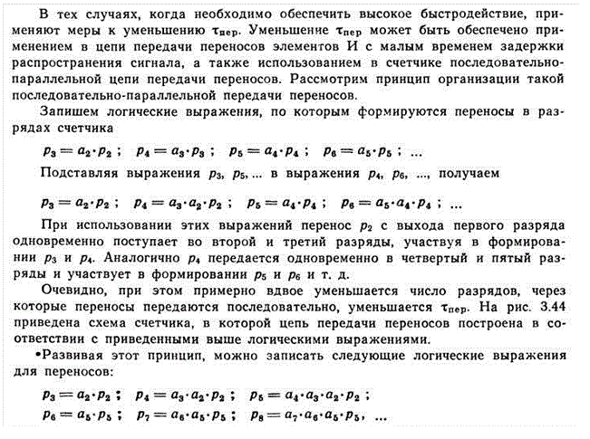
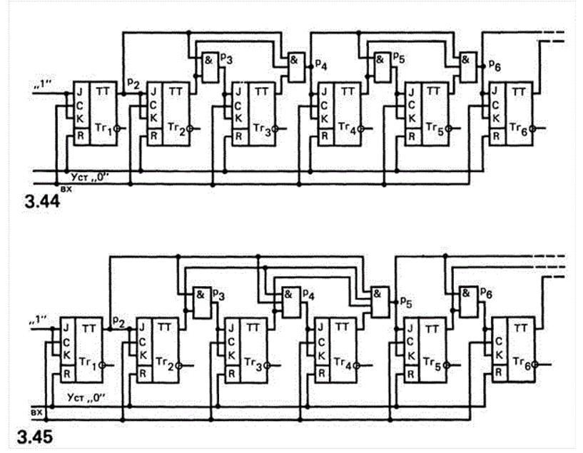
Схема счетчика на рис. 3.45 построена с использованием этих выражений. Такой счетчик обеспечивает еще большее снижение τпер.
Следует иметь в виду, что использование рассмотренного принципа повышения быстродействия вызывает усложнение схемы счетчика, связанное с использованием в цепи передачи переносов элементов И с большим числом входов.
Вычитающий и реверсивный счетчики
В вычитающем счетчике поступление на вход очередной лог. 1 (очередного импульса) вызывает уменьшение хранившегося в счетчике числа на единицу.
Покажем примеры такого вычитания единицы:
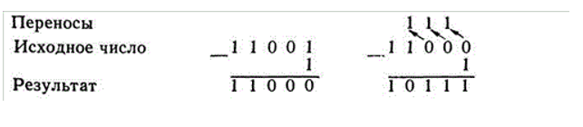
Из первого примера видно, что если в младшем разряде числа содержится 1, то получающееся в результате вычитания 1 число отличается от исходного лишь в младшем разряде.
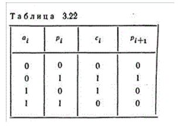
Если в младшем разряде числа содержится 0, то процесс вычитания сопровождается возникновением переносов. В отличие от операции суммирования, в которой перенос прибавляется в разряд, в который он поступает, в операции вычитания перенос имеет смысл заема из следующего, более старшего разряда и вычитается из этого разряда. Последовательная передача таких заемов из разряда в разряд продолжается до тех пор, пока в очередном разряде, в который передается заем, не обнаруживается 1. Так, во втором из приведенных выше примеров такая 1 обнаруживается в четвертом разряде. В результате заема этой 1 в четвертом разряде образуется 0, а занятая из этого разряда 1 передается в третий разряд, где она имеет уже значение 2. Из этих двух единиц в третьем разряде остается одна, а другая передается во второй разряд, где она также приобретает значение 2 и т. д.
Таким образом, в результате вычитания часть числа левее первого из разрядов, содержащих 1, остается неименной, цифры остальных разрядов инвертируются.
Функционирование i-гo разряда счетчика при выполнении операции вычитания единицы представлено в табл.3.22.
Из этой таблицы истинности следуют логические выражения:
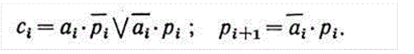
Цифры разрядов Ci определяются тем же логическим выражением, что и в суммирующем счетчике. Следовательно, как и в суммирующем счетчике, перенос должен подаваться на счетный вход, образованный соединением информационных входов J и К триггера. Отличие выражения pi+1 (по сравнению с соответствующим выражением суммирующего счетчика) состоит в том, что вместо аi использовано аi -. Таким образом, в вычитающем счетчике на элементы И, формирующие переносы, подаются сигналы с инверсных выходов триггеров.
На рис. 3.46 показана схема вычитающего счетчика с последовательной передачей переносов. Для повышения скорости работы счетчика могут быть использованы последовательно-параллельные цепи передачи переносов. Вычитающий счетчик, как и суммирующий, имеет период циклической работы, равный 2n импульсов.
Реверсивный счетчик - счетчик, допускающий в процессе работы переключение из режима суммирования в режим вычитания, и наоборот. На рис. 3.47 приведена схема такого счетчика. В ней предусмотрены две цепи передачи переносов, одна из которых соответствует схеме суммирующего счетчика, другая — схеме вычитающего счетчика. Управляющие сигналы Л и /2 включают в работу одну или другую цепь.
При I1=1 и I2 = 0 оказывается закрытым элемент И2 и, следовательно, отключена цепь передачи переносов режима вычитания. Счетчик работает в режиме суммирования. При I1 = 0 и I2 = 1 закрыт элемент И1 и отключена, таким образом, цепь передачи переносов режима суммирования, счетчик работает в режиме вычитания.
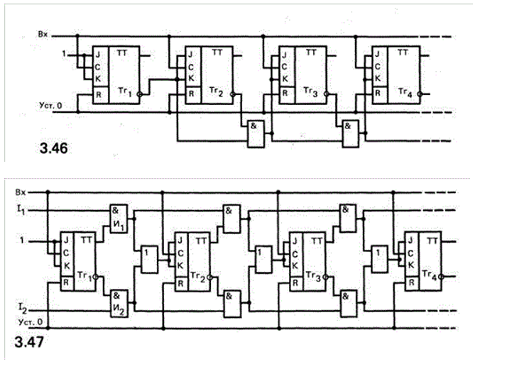
Счетчик с периодом циклической работы, не выражаемым целой степенью двух
Пусть счетчик должен иметь период циклической работы, равный N, причем N не представляется целой степенью двух. Необходимое число триггеров определяется как минимальное n, удовлетворяющее неравенству 2n ≥ N.
Счетчик с таким числом триггеров может иметь период 2n ≥ N, больший требуемого N. Поэтому после установления в счетчике числа N—1 необходимо в следующем такте работы обеспечивать сброс счетчика в нулевое состояние.
Покажем метод синтеза такого счетчика. Пусть требуется синтезировать счетчик с периодом N = 3. Число триггеров п = 2 (это минимальное значение, удовлетворяющее неравенству 2n ≥ N.1, K1 и J2, К2» Рассмотрим метод, позволяющий определить, каким образом должны включаться информационные входы триггеров. Под действием входных импульсов счетчик переходит из одного состояния (с одной комбинацией состояний триггеров) в другое (с другой комбинацией состояний триггеров). Комбинация состояний триггеров определяет двоичное число, значение которого при переходе счетчика в новое состояние увеличивается на единицу или устанавливается равным нулю после достижения максимального значения N—1. Такие переходы счетчика с периодом цикла N=3 показаны в табл. 3.23.
Переход счетчика в новое состояние связан с переключением триггеров. Для перевода триггеров в требуемые состояния необходимы на его входах определенные логические уровни. В табл. 3.24 показаны все возможные переходы состояния триггера и требуемые для этих переходов логические уровни на входах J и К. Знак «—» означает, что логический уровень на входе может быть произвольным (лог. О или 1). Пользуясь этой таблицей, легко построить таблицы истинности для входов J и К всех триггеров счетчика. При этом логические уровни на входах J и К являются функциями текущего состояния и на картах Вейча (табл. 3.25) под а2 и а1 понимается состояние триггеров перед поступлением на вход счетчика очередного импульса.
Пусть к моменту подачи импульса на вход счетчика триггеры находились в состоянии а2 = 0, а1 = 0. Под действием входного импульса должно быть обеспечено новое состояние а2= 0, а1=l.
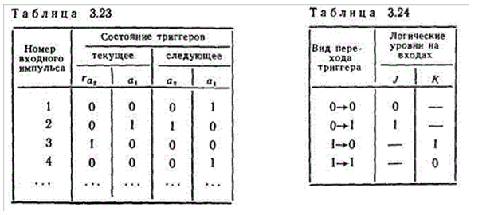
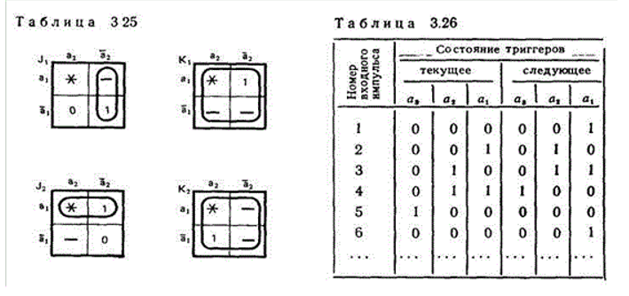
Следовательно, в триггере Tr1 происходит переход вида 0→1, обеспечиваемый при следующих уровнях на информационных входах: J1 = l; K1 = —; в триггере Tr2 переход вида 0→0 обеспечивается уровнями J2 = 0; K2 = —. Эти значения занесены в клетки карт Вейча, соответствующие а2 = 0 и а1 = 0.
Перевод триггеров из состояния а2 = 0; а1 = l в следующее сосостояние а2=1, а1 = 0 требует подачи на информационные входы триггеров уровней J1 = —; K1 = 1; J2 = 1; K2 = —Эти значения нанесены на карты Вейча для состояния а2 = 0, а1 = 1. Наконец, перевод триггеров из состояния a2 = l, а1 = 0 в состояние а2 = 0, а1= 0 требует следующих уровней на входах: J1 = 0; K1 = —; J2 = —; K2 = 1.
Состояние а2=1, а1 = l в рассматриваемом счетчике не используется, в соответствующие этому состоянию клетки карт записан символ «*», означающий запрещенную комбинацию.
По картам Вейча могут быть получены следующие минимальные логические выражения для информационных входов триггеров: J1 = a2; K1 = 1; J2 = a1; K2 = l. Полученные логические выражения определяют способ включения входов J и К триггеров, показанный на рис. 3.48,6.
Построим счетчик с периодом цикла N = 5. В таком счетчике используется три триггера. Изменение состояния триггеров под действием входных импульсов показано в табл. 3.26.
В табл. 3.27 приведены карты Вейча для информационных входов триггеров, из которых следует
J1 = a3; K1 = 1; J2 = a1; K2 = a1; J3 = a1* a2; K3 = 1
На рис. 3.49 показана схема счетчика.
Приведем пример построения еще одного счетчика с периодом цикла N = 6. Состояния счетчика и карты Вейча для входов J и К триггеров даны соответственно в табл. 3.28 и 3.29.
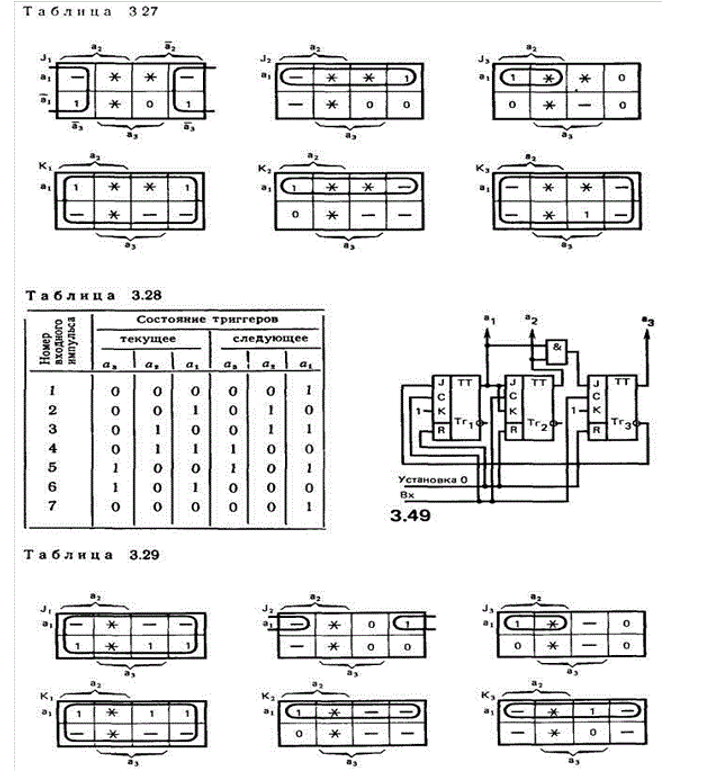
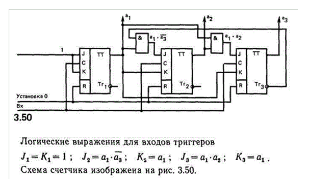
Десятичный счетчик
На рис. 3.41 была показана структура десятичного счетчика. Каждый десятичный разряд такого счетчика — декада — представляет собой двоичный счетчик с периодом цикла, равным N=10.
В табл. 3.30 и 3.31 представлены состояния декады и карты Вейча для входов ее триггеров. Из карт Вейча могут быть получены следующие логические выражения для входов J и К триггеров декады:
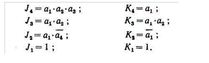
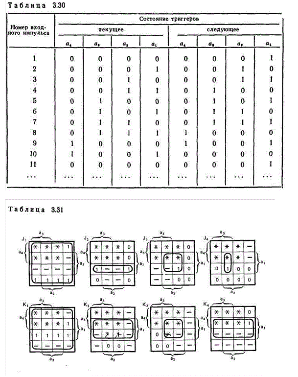
На рис. 3.51 приведена схема декады и показана связь со следующей декадой. Как видно из схемы, входными импульсами следующей декады являются импульсы, возникающие на выходе триггера старшего разряда данной декады. В момент отрицательного фронта десятого импульса, поступающего на вход данной декады, триггеры этой декады переходят в состояние 0, на выходе триггера четвертого разряда возникает спад уровня от значения лог. 1 до значения лог. 0. Спад уровня вызывает переход следующей декады в состояние, соответствующее двоичному числу, на единицу большему.
Десятичные счетчики находят широкое применение в тех случаях, когда число поступающих импульсов необходимо представлять в привычной для человека десятичной системе счисления.
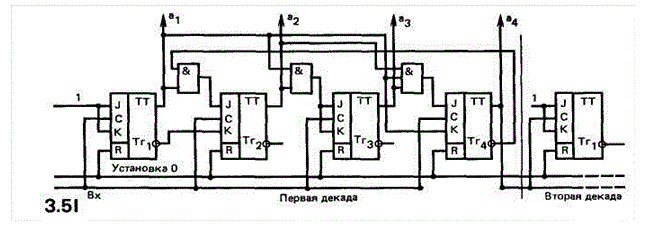
Кольцевой счетчик
В рассмотренных выше счетчиках число поступлений на вход импульсов представляется в форме двоичного числа, цифры разрядов которого выражаются через состояние триггеров. При этом, если требуется получить десятичное представление числа импульсов, к выходам счетчика подключается дешифратор.
На рис. 3.52 показано подключение дешифратора к декаде десятичного счетчика. В этой схеме уровень лог. 1 появляется на том из выходов дешифратора, десятичный номер которого соответствует двоичному числу в счетчике. В процессе счета с каждым поступлением на вход импульса происходит переход лог. 1 на следующий выход, номер которого на единицу больше.
Неудобства, связанные с необходимостью применения дешифратора, устраняются в кольцевом счетчике. В нем число поступлений импульсов выражается непосредственно в десятичной системе счисления и не возникает необходимости в использовании дешифратора.
Кольцевой счетчик строится в виде сдвигового регистра, в котором выдвигаемая из старшего разряда информация вводится в младший разряд. Схема счетчика показана на рис. 3.53.
В счетчике использовано N триггеров. Перед началом счета импульсом начальной установки триггер Tr0 устанавливается в состояние 1, остальные триггеры — в состояние 0. Этому состоянию счетчика соответствует число 0; на выход счетчика, обозначенный цифровой 0, с прямого выхода триггера Tr0 передается лог. 1. Далее каждый из приходящих на вход счетчика импульсов переписывает 1 в следующий триггер и лог. 1 передается на следующий выход, обозначенный цифрой, на единицу большей. Таким образом, по тому, какой из триггеров находится в состоянии 1, т. е. на выходе какого из триггеров возникает уровень лог. 1, выявляется число поступивших на вход счетчика импульсов непосредственно в десятичной системе счисления.
Кольцевой счетчик обеспечивает высокую скорость работы. Это связано с тем, что единица из одного триггера в другой передается непосредственно (без использования в цепи передачи логических элементов) путем подключения входов J и К каждого триггера соответственно к прямому и инверсному выходам предыдущего триггера.
После подачи N—1 импульсов в состоянии 1 окажется триггер TrN-1, а с приходом N-го импульса единица из триггера TrN-1 перепишется в триггер Tr0 и счет импульсов начнется сначала. Таким образом, период цикла кольцевого счетчика равен числу использованных в нем триггеров. Например, для построения декады десятичного счетчика по принципу кольцевого счетчика потребуется 10 триггеров (вместо четырех триггеров в двоичном счетчике). Таким образом, возможность получения из счетчика чисел непосредственно в десятичной системе счисления достигается существенным увеличением числа используемых в схеме счетчика элементов.
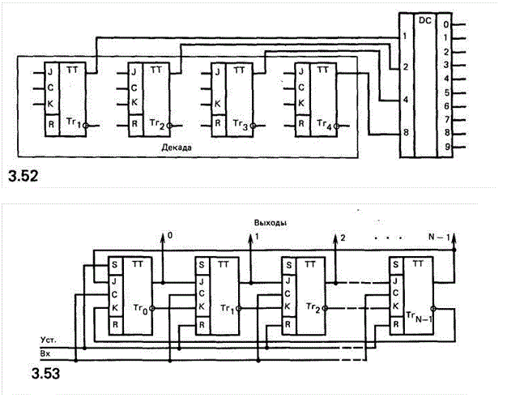